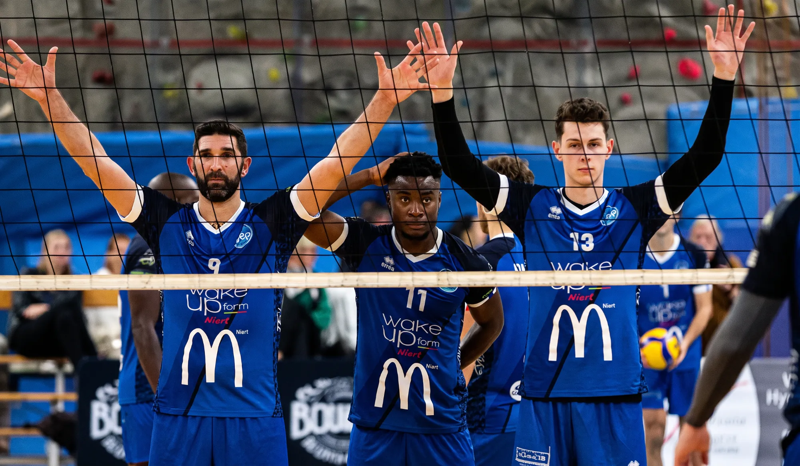
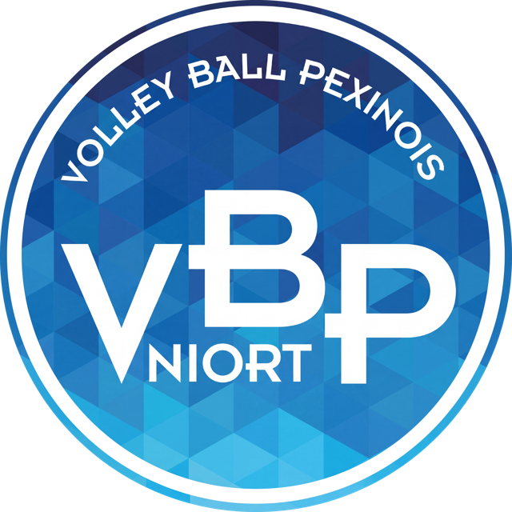
Proposition · vbpniort.fr
Un site à la hauteur du club
Refonte et réorganisation du site du Volley-Ball Pexinois Niort
Richard GONZALEZ · RichGT · Octobre 2026
Qui suis-je
Richard Gonzalez
Graphiste et développeur web · studio RichGT
J’aime le volley, que j’ai pratiqué pendant des années quand j’étais jeune. Cette année, mon fils Martín a pris sa licence au club, et l’accompagner à chaque entraînement m’a rapproché de ce sport.
Nous sommes arrivés en France il y a trois ans. J’apprends encore le français : c’est pour cela que cette présentation explique tout par écrit.
20
ans de métier, entre graphisme et développement web
+100
projets web menés à bien
50
grands clients qui m’ont fait confiance
6
pays différents : le Chili, l’Espagne, le Panama, la France…
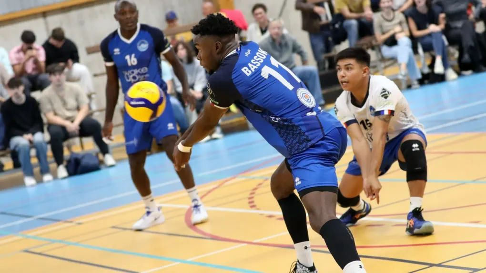
Pourquoi cette proposition
Ce que j’ai vu au club ne se voit pas sur le site
Avant de connaître le club, j’avais vu son site. Ensuite, aux entraînements, j’ai trouvé de la passion, du sérieux et de l’envie chez toutes les personnes que j’ai croisées. Rien de tout cela ne se retrouvait sur le site.
Cette proposition est une initiative personnelle : personne ne me l’a demandée. Je la présente parce que je crois que le club mérite de se montrer tel qu’il est vraiment.
La proposition
Refondre et réorganiser le site autour de cinq objectifs
Attirer de nouveaux licenciés
Mieux présenter le club pour donner envie de le rejoindre.
Mieux informer
Matchs, entraînements, événements : tout ce que fait le club, et c’est beaucoup.
Montrer notre cœur
La formation : ce qui rend ce club unique.
Plus beau et plus accueillant
Clair et agréable pour chaque visiteur, aussi sur mobile.
Être fiers
Nous voir sur le site comme nous sommes déjà sur le terrain.

01
Le site aujourd’hui
Avant de proposer quoi que ce soit, un regard sur vbpniort.fr tel qu’il est aujourd’hui.
Diagnostic · la page d’accueil actuelle
La première chose que voit un visiteur
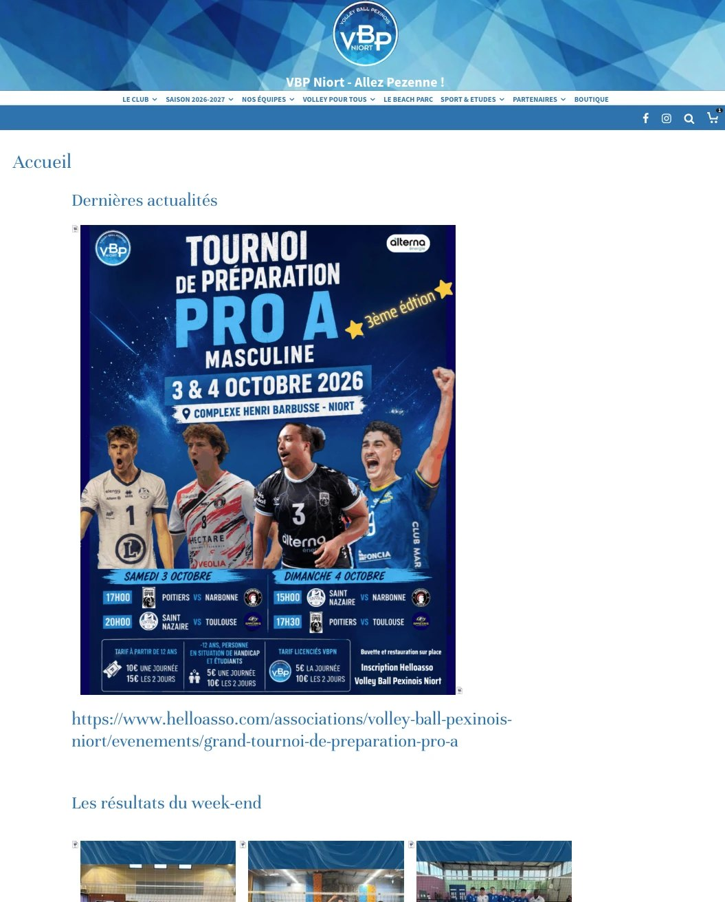
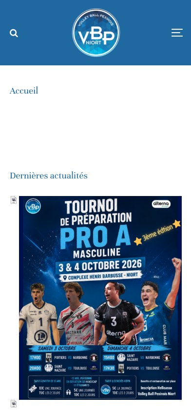
Elle s’ouvre sur une affiche
Le texte est dans l’image : il se lit mal sur mobile et n’apparaît pas dans Google.
Un long lien affiché en clair
L’adresse Helloasso complète écrite en texte, au lieu d’un bouton.
Huit menus en tout petit
S’inscrire ou voir le prochain match n’apparaît pas au premier coup d’œil.
Sur mobile, un grand vide
L’écusson, le mot « Accueil » et un grand espace blanc avant le contenu.
Diagnostic · les pages
L’information est là, mais difficile à trouver
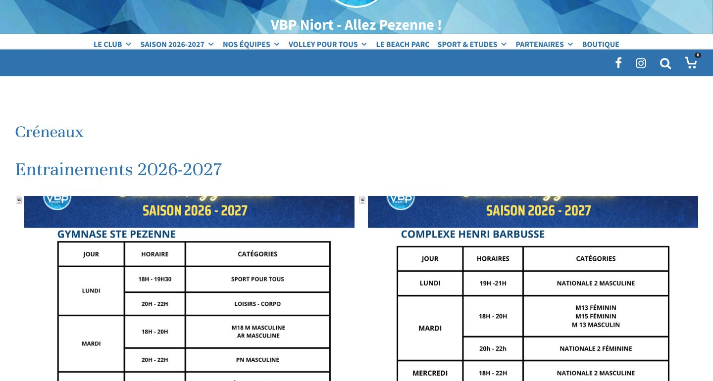
Des horaires en image
Difficiles à lire sur mobile et impossibles à rechercher. Même chose pour les calendriers et les résultats.
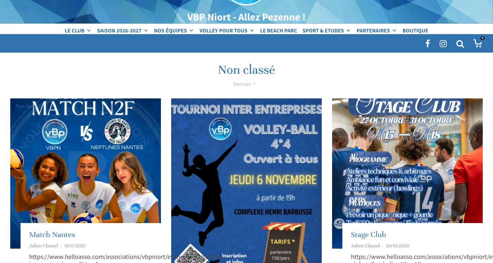
Des actus sans classement
Toutes dans « Non classé », et beaucoup ne sont qu’une affiche sans texte.
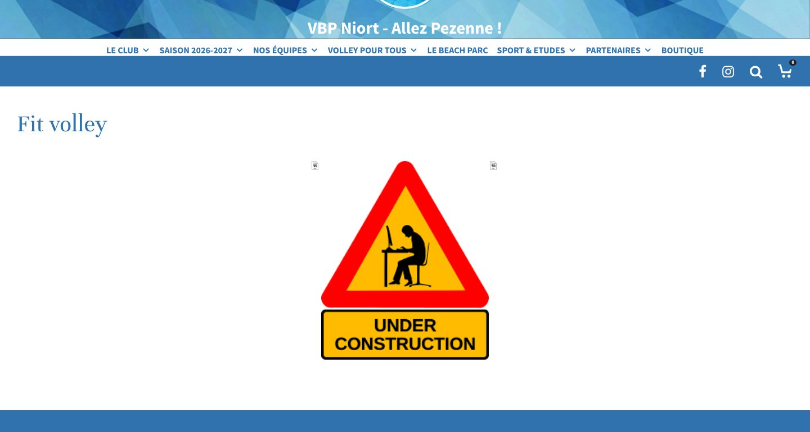
« En construction »
Fit volley figure dans le menu, mais la page n’a pas de contenu.
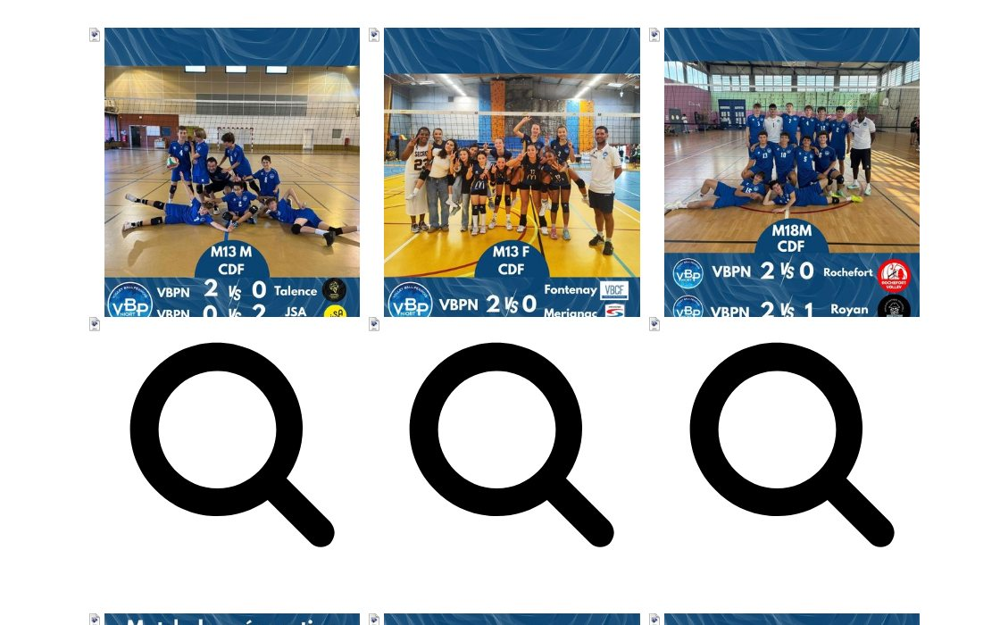
Des loupes géantes
En page d’accueil, une énorme loupe noire apparaît sous chaque résultat du week-end.
Diagnostic · en résumé
Six problèmes qui reviennent
Des infos en images
Horaires, calendriers, organigramme et résultats sont publiés en PNG.
Des actus sans classement
Toutes dans « Non classé » ; beaucoup ne sont qu’une affiche sans texte.
Des infos pas à jour
Des pages de la saison 2022-23 sont encore en ligne, avec des liens vers d’anciens résultats.
Des pages vides ou cassées
Fit volley « en construction », Manifestations vide et un lien du menu qui mène à une erreur.
Des éléments cassés visibles
Des loupes géantes sous les résultats et de longs liens écrits en texte.
Des détails qui desservent
Des emojis dans les titres, un écusson sans texte alternatif et une mise en page qui oublie le mobile.
Le contenu existe et il est très bon. Ce qui coince, c’est la façon de le montrer.
02
L’identité du club, remise en valeur
Pas de nouvelle marque : on remet en ordre celle que le club porte déjà sur son écusson.
Identité · écusson
L’écusson, utilisé avec respect
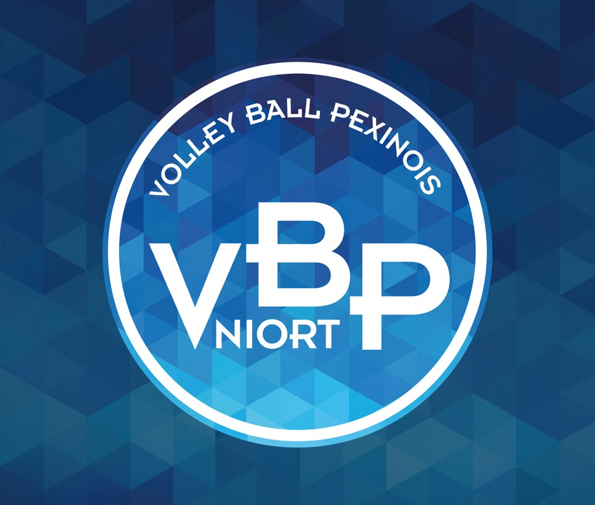
Tel qu’il est : on ne touche pas à l’écusson du club.
Avec de l’air autour, sans texte ni photo par-dessus.
72 px minimum à l’écran, pour que son texte reste lisible.
Ni étiré, ni tourné, ni recoloré.
Identité · couleurs
Les couleurs viennent de l’écusson
Bleu Pezenne
#1C5FA6 · le bleu principal
Bleu marine
#1B4180 · bandeaux et pied de page
Bleu nuit
#0B1B33 · textes et couvertures
Bleu ciel
#2AA3DA · accents et icônes
Ballon
#FFC21A · le bouton principal
Une couleur par section
Masculin
Féminin
Jeunes
Proportions
60 % blanc et glace · 30 % bleus · 10 % jaune et ciel
Identité · typographie
Trois polices, chacune son rôle
Titres
Allez Pezenne !
Space Grotesk
Géométrique, moderne et pleine de caractère.
Textes
Du baby volley à la Nationale 2, un club pour tous, de 4 à 80 ans et plus.
Open Sans
Claire et agréable à lire, aussi sur mobile.
Scores
3 – 1
Archivo large
Ses chiffres larges rappellent les lettres de l’écusson.
Identité · formes
Trois formes tirées de l’écusson
Le losange couché
Les losanges du fond de l’écusson. Ils signalent titres, catégories et rubriques.
La diagonale
La coupe inclinée des triangles. Elle termine couvertures, photos et bandeaux.
La mosaïque
Les triangles bleus de l’écusson, devenus le fond du club.
Sans voile : l’original
Identité · fond du club
La mosaïque, mieux mise en valeur
Aujourd’hui, la mosaïque n’apparaît que dans l’en-tête, derrière l’écusson et le menu. L’idée : l’étendre aux couvertures et aux bandeaux de rubrique, sous un voile bleu pour que les textes restent toujours lisibles.
03
Le nouveau site
Une maquette navigable : six pages pour saisir l’esprit du changement.
Découvrir la maquette →1/6 · Accueil
Le club en un coup d’œil
À la une : l’actu principale, avec de vraies photos.
Les matchs du week-end : à venir et résultats.
Un volley pour chaque âge : sa catégorie et ses horaires en deux clics.
La formation au centre : chiffres et filière du club.
Les actus et les partenaires qui nous soutiennent.
3/6 · Se licencier
S’inscrire sans se perdre
Avec l’année de naissance, on connaît sa catégorie.
Des tarifs clairs pour chaque catégorie.
Trois étapes pour s’inscrire.
Documents et questions fréquentes au même endroit.
4/6 · Notre histoire
Une histoire bien racontée
Une frise chronologique depuis 1963.
Des photos d’archives de chaque époque.
Le chemin parcouru, de quoi être fiers.
Les présidents qui ont fait le club.
5/6 · Calendrier & résultats
Toute la saison, bien rangée
Filtres : féminin, masculin et jeunes.
Le classement juste à côté.
Tous les matchs, mois par mois.
Le score et les sets de chaque rencontre.
6/6 · Fiche équipe
Chaque équipe a sa page
Grande photo, division et encadrement.
Joueuses et joueurs, avec leur numéro.
Saison, résultats et entraînements.
Les partenaires qu’on porte sur le maillot.
04
Et maintenant ?
La décision revient au club.
Prochaines étapes
Si cela vous intéresse, construisons-le ensemble
01
Vous décidez
Si la proposition vous parle et que vous souhaitez aller plus loin.
02
On en discute
Comment le rendre possible : périmètre, délais et la façon de travailler qui convient le mieux au club.
03
On s’y met
Je développe le site par étapes, avec votre validation à chaque étape.
Je ne viens pas avec un devis : je souhaite d’abord savoir si vous avez envie d’avancer. Nous verrons ensuite ensemble comment faire, et je suis ouvert à toutes les possibilités.
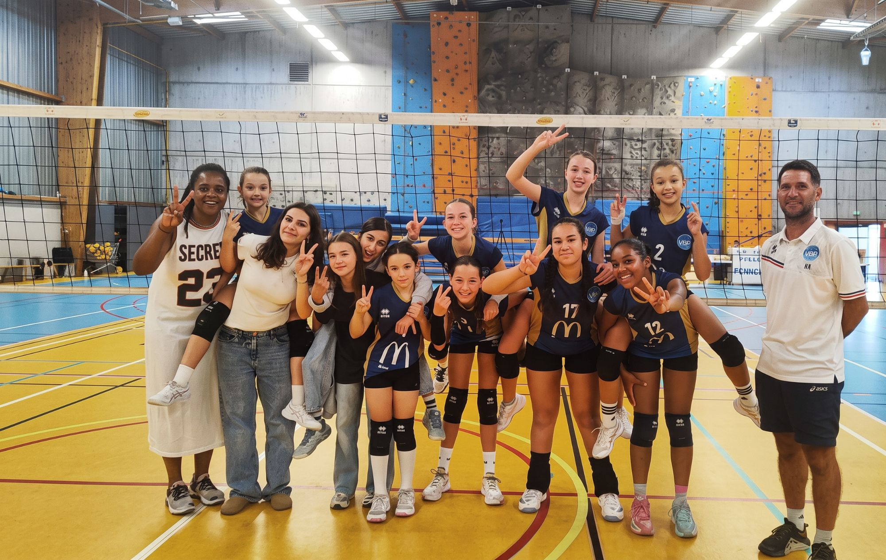
J’aimerais beaucoup le concrétiser
La suite est entre vos mains.
Richard GONZALEZ · RichGT